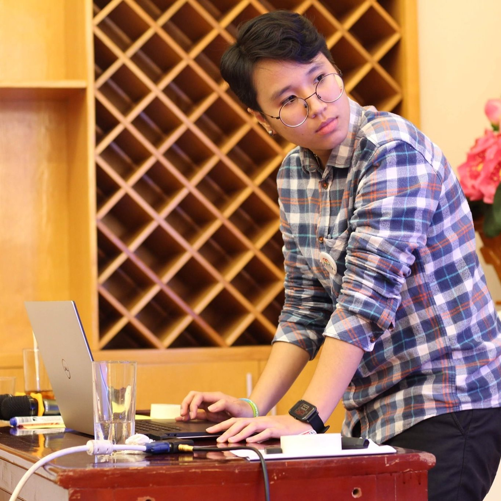

MINH TRANG NGUYEN

I'm a Graphic Designer trying to be a Full-stack Designer
My Design Portfolio:
Behance
Contact
- Telephone: +84 357111295
- Email: mtrangng1112@gmail.com
Work Experience
2D Graphic Designer - SANAKY
July 2021 - June 2023
- Digital and Print design
- Motion graphics and Simple product video
Communication Officer (Graphic Designer) - Center for Studies and Applied Sciences in Gender - Family - Women and Adolescent
April 2019 - May 2021
- Digital and Print design
- Motion graphics
- Copy-writer
- Social media manager
Software
- Adobe Illustrator
- Adobe Photoshop
- Adobe After Effects
- Adode Premiere Pro
- Affinity Designer
- Affinity Photo
Languages
- English (fluent)
- French (Conversational)
- Vietnamese (Native)
(?) Why I don't list my Education here?
I believe that anyone can qualify for a job as long as they study and practice their craft passionately. Despite having no background in design, I became a designer because I love to draw and experiment with different creative ideas. Currently, I am striving to become a full-stack designer since I aim to expand my skill set and keep learning.